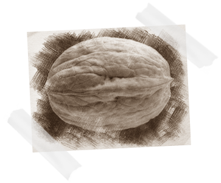
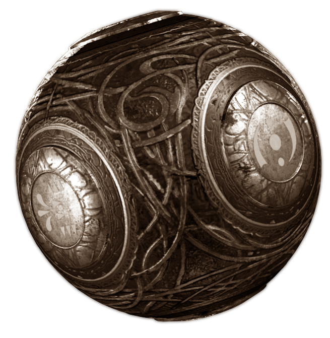

Responsáveis pela transcrição:
Nixaru:
http://youtube.com/c/nixaru
GregFPS:
http://www.youtube.com/GregFPS
Peter:
http://www.youtube.com/jedixking98
LunA TiCC:
https://www.youtube.com/lunaticc
rh:
https://www.youtube.com/user/reyhennen24
Avxry:
https://www.youtube.com/user/Avxry
DavidOfTheState:
https://www.youtube.com/c/DavidOfTheState
StarrBurrst:
https://www.youtube.com/user/GHxStarrBurrstx
Responsável pela tradução* para Português-BR:
gabemoura:
https://www.youtube.com/c/gabemouragm
Responsável pelo Site
Vaanic:
https://www.youtube.com/channel/UC-oI52gqxZn_htp4DsN0g4w
Livro Original
Existem 4 Linhas do tempo:
O começo de tudo
Dimensão 63
Agartha
Fractures
*Alguns nomes de locais, entidades, entre outros, foram mantidos no idioma original para não perder o sentido da frase ou a ideia da mesma.
Victis: Quarteto Tranzit
Primis: Quarteto Origins
Ultimis: Os 4 Originais
O começo de tudo
Havia apenas o Aether e os Keepers. Entre eles existiam dois seres que mais tarde seriam conhecidos por vários nomes. Um deles conhecido como Dr. Monty e o outro como Shadowman.
3 de setembro, 5 AD
Sabendo que o planeta possuía um caminho até Agartha, os Apothicons enviaram meteoros de Elemento 115 para a Terra. Eles acreditavam que um dia a humanidade usaria o Elemento 115 para ocasionar uma guerra entre eles, abrindo um portal que permitiria com que os Apothicons escapassem do Dark Aether.
15 de janeiro de 1292
A Grande Guerra entre a humanidade e os Apothicons começa.
14 de abril de 1294
Sir Pablo Marinus é salvo das garras do Margwa por 4 heróis desconhecidos. Mais tarde eles seriam conhecidos como os Primis.
31 de dezembro de 1299
Junto com os Keepers, os Primis derrotam os Apothicons, colocando um fim na Grande Guerra.
1º de janeiro de 1300
Antes de aparentemente desaparecerem da história, os Primis instruíram o Wolf King a começar a construir Der Eisendrache.
19 de setembro de 1318
Honrando o pedido de Wolf King antes de morrer, seu leal servo Arthur (o gigante de Buried) enterra seus ossos no solo de Der Eisendrache, acompanhado pelo lobo do Rei.
20 de setembro de 1318
Um portal (fendas temporais) teleporta Arthur para Resolution 1295 no ano de 2025, em Angola.
30 de junho de 1908
Um meteoro contendo Elemento 115 cai perto do Stony Tunguska River.
30 de agosto de 1925
Edward Richtofen se junta aos Iluminati.
4 de fevereiro de 1931
Grandes quantidades do Elemento 115 são descobertas perto de Breslau, Alemanha. Dr. Ludvig Maxis, um cientista Alemão, é enviado para investigar.
10 de maio de 1931
Maxis forma o Grupo 935, uma organização internacional dedicada para estudar o Elemento 115. Maxis diz para os cientistas que eles “representam o futuro do avanço tecnológico” e serão “os pioneiros da descoberta humana”. O grupo jura trabalhar em segredo de seus respectivos governos. Maxis diz: não podemos deixar esse poder cair nas mãos erradas.
5 de novembro de 1934
Nasce Samantha Maxis. Sua mãe morre durante o parto.
11 de agosto de 1936
Maxis convida Richtofen para se juntar ao Grupo 935. Ele concorda, atuando secretamente pelos interesses dos Iluminati.
10 de abril de 1937
O Exército Imperial Japonês descobre o Elemento 115 através de fragmentos de meteoros em um pântano dentro do território japonês. Eles constroem a Rising Sun Facility (Shi No Numa) para continuar as pesquisas. Divisão 9 é criada para supervisionar a operação.
14 de junho de 1937
O governo dos Estados Unidos descobre quantidades do Elemento 115 no Groom Lake.
2 de julho de 1939
Maxis e Richtofen começam os experimentos de teletransporte com o Protótipo de Transferência de Matéria, com um pequeno sucesso. As cobaias são teleportadas mas a composição química delas é alterada, deixando-as catatônicas e modificadas.
5 de agosto de 1939
Usando Elemento 115, Maxis e Richtofen ressuscitam um dos corpos teleportados pela primeira vez. Inicialmente a cobaia obedece, mas logo depois começa a ficar violenta e os ataca e então é eliminada.
3 de setembro de 1939
Richtofen começa a desenvolver a Wunderwaffe DG-2.
23 de novembro de 1939
Maxis recorre ao Reichstag (Parlamento Alemão) para pedir fundos. A Alemanha concorda com o pedido, expressando interesse na pesquisa de armas, na tecnologia de teletransporte e reanimação de cobaias.
4 de dezembro de 1939
Durante o Teste 151, Richtofen e Dr. Schuster teleportam com sucesso uma noz. É o primeiro teste pelo qual a composição química do objeto é mantida intacta durante o processo.
5 de dezembro de 1939
A experiência do teleporte da noz não impressiona Maxis que diz ser perda de tempo. Ele revela a Richtofen que o Grupo 935 será financiado pela Alemanha. Richtofen preocupa-se que isso poderá levar a traições. Ele e Schuster decidem continuar os experimentos de teletransporte pelas costas de Maxis.

4 de janeiro de 1940
Richtofen e Schuster conduzem o primeiro teste de teletransporte com humanos. Richtofen está tão seguro no seu sucesso que acaba se voluntariando para o teste. Teleportado para Moon, ele encontra o MPD, a Pirâmide de Aether escondida pelos Apothicons. Enquanto inspeciona o dispositivo, Richtofen é eletrocutado e começa a escutar várias vozes corrompidas, incluindo a de Shadowman. O dispositivo então o teleporta para Shangri-La. Corrompido pelo Dark Aether, Richtofen gradativamente vai perdendo sua sanidade com sua obsessão em encontrar Agartha.
5 de janeiro de 1940
Richtofen é ‘endeusado’ pelos nativos de Shangri-La: um altar é construído em seu nome. Richtofen encontra a Focusing Stone pela primeira vez.
23 de janeiro de 1940
Após quase um mês, Richtofen retorna a Schuster com um plano para construir a Griffin Station.
24 de janeiro de 1940
Richtofen renuncia seu envolvimento com os Iluminati. Quando questionado sobre ‘como poderia abandonar sua obrigação com a Ordem’, ele diz: “Teddy era um mentiroso.”
13 de março de 1940
A construção da Griffin Station na lua começa. Frustrados perante aliança de Maxis com a Alemanha, outros cientistas do Grupo 935, descontentes, se juntam à causa.
13 de julho de 1940
Maxis ordena que sua assistente Sophia escreva uma cara para a Reichstag High Command pedindo por mais fundos. Apesar dele reportar que a produção em massa logo estaria em funcionamento, Der Riese sofre com a falta não apenas de fundos, mas também de quantias de Elemento 115.
1º de agosto de 1940
Em resposta ao pedido de Maxis, a Alemanha cria duas novas instalações para o Grupo 935. A Kino Facility (Kino der Toten), um teatro reaproveitado, e a Asylum Facility (Verruckt), na Wittenau Sanatorium em Berlim.
18 de agosto de 1940
À pedido da Alemanha, o Exército Imperial Japonês entrega o comando da Rising Sun Facility para o Grupo 935. Divisão 9 continua envolvida no local.
3 de outubro de 1940
Grupo 935 funda uma instalação de pesquisas na Sibéria perto do Tunguska River.
6 de novembro de 1940
Grupo 935 funda uma instalação de pesquisas em Der Eisendrache.
24 de junho de 1941
A esposa de Nikolai Belinski é morta durante o avanço alemão na União Soviética. Aos poucos, para tentar se recuperar da dor, Nikolai escolhe a Vodka.
11 de janeiro de 1942
Maxis dá Fluffy para Samantha. A cadela está esperando uma ninhada.
20 de janeiro de 1942
Maxis testa o primeiro arquivo no servidor de dados.
26 de janeiro de 1942
No servidor de dados, Maxis cataloga locais com depósitos proeminentes de Elemento 115. Ele inclui informações sobre suas várias aplicações e cidades em que a reanimação de células mortas é um possível efeito colateral.
30 de janeiro de 1942
Richtofen completa o protótipo da Wunderwaffe DG-2.
1º de fevereiro de 1942
Com a Griffin Station concluída, Richtofen nomeia Dr. Groph como cientista-chefe e retorna para a Terra para continuar as charadas com Maxis. Trabalhando juntamente com Schuster, Groph é encarregado de descobrir o poder do MPD.
2 de fevereiro de 1942
Em um discurso para sua equipe, Groph, de forma otimista, fala sobre a Griffin Station se estabelecer como uma base permanente de operações.
17 de abril de 1942
Maxis desenvolve um protótipo da Ray Gun na Rising Sun Facility. H. Porter trabalha no desenvolvimento do modelo de 2ª geração.
13 de junho de 1942
Em resultado das fendas temporais em 1963 Kino, Monty atravessa o tempo e dá pequenos ‘empurrões’. Um deles diz respeito ao Grupo 935, sobre o desenvolvimento dos elixires fundidos com Elemento 115. Eles criam quatro bebidas medicinais conhecidas coloquialmente como Juggernog, Quick Revive, Speed Cola e Double Tap.
28 de junho de 1942
Grupo 935 continua a desenvolver uma máquina para o upgrade de armas.
18 de julho de 1942
Groph e Schuster acabam descobrindo sem querer como carregar o MPD, quando Schuster mata um rato perto do dispositivo. Sua morte inexplicavelmente começa a encher o tanque, carregando o dispositivo. Eles reportam sua descoberta para Richtofen.
20 de julho de 1942
Richtofen começa a enviar soldados e cientistas para a lua para serem sacrificados; suas almas eram usadas para carregar o MPD.
5 de novembro de 1942
Takeo Masaki é enviado pelo Imperador para supervisionar o trabalho do Grupo 935 e da Divisão 9 na Rising Sun Facility.
8 de dezembro de 1942
Richtofen compartilha a receita dos Elixires à base de Elemento 115 com a Griffin Station. Eles acabam criando o Mule Kick.
9 de dezembro de 1942
O irmão de Nikolai é morto na Batalha de Stalingrado.
14 de dezembro de 1942
Richtofen cria a Monkey Bomb.
16 de dezembro de 1942
Em seu diário pessoal, Maxis expressa sua preocupação com o impacto do Elemento 115 no comportamento de Richtofen. Ele se pergunta se foi um erro ter convidado Richtofen para o Grupo 935 e passa a não confiar mais nele.
20 de dezembro de 1942
Acompanhado por Sophia, Maxis é transferido para a instalação em Kino para focar na criação no exército de mortos-vivos alemão. Samantha é deixada aos cuidados de Richtofen.
8 de janeiro de 1943
Maxis se preocupa que ele e Sophia estejam se tornando muito íntimos. Então considera mandar ela embora.
16 de janeiro de 1943
Nikolai é capturado pelas Forças Alemãs durante a Batalha de Stalingrado. Ele se torna uma cobaia nos experimentos do Grupo 935.
27 de janeiro de 1943
Maxis reporta sucesso com a ‘Cobaia 26’, cujos “episódios violentos foram reduzidos drasticamente.” Maxis acredita que “esse método de tratamento será 100% eficaz na maioria dos casos”.
2 de fevereiro de 1943
A Batalha de Stalingrado chega ao fim.
10 de fevereiro de 1943
Maxis reporta que o tratamento tem sido perfeito. Ele acredita que se “a cobaia 26 conseguir se manter constante por mais de 26 horas, então a entrega do exército zumbi pode ser acelerada.”
12 de fevereiro de 1943
Após matar um ajudante, a ‘cobaia 26’ é morta é considerada ‘outro retrocesso’.
18 de maio de 1943
Harvey Yena começa a trabalhar com o Grupo 935.
4 de junho de 1943
Os Primis chegam da Dimensão 63. Em um esforço para evitar os eventos que estão prestes a ocorrer, eles formulam um plano para parar o Richtofen dessa dimensão.
11 de junho de 1943
Maxis, diretamente da Casa, entra em contato com Richtofen, alertando que “as cobaias nunca deverão ser despertadas, a destruição que poderia assolar no futuro por criaturas com mentes tão simples poderia ser catastrófica.”
15 de junho de 1943
Takeo reporta para o Imperador que o trabalho sendo realizado na Rising Sun Facility é “inaceitável”.
19 de julho de 1943
Primis Richtofen é teleportado para a Casa em Agartha, reunindo-se com Maxis.
24 de julho de 1943
Pelas ordens do Imperador, Takeo é feito prisioneiro pelo Grupo 935 e pela Divisão 9. Ele é usado como cobaia para os experimentos.
14 de julho de 1944
Após os contratempos com a ‘cobaia 26’, Maxis reporta novo sucesso com o exército de mortos-vivos. Entretanto, ele mantém sua crença de que os mortos-vivos não podem ser controlados ou mantidos.
2 de setembro de 1944
Pablo Manius, um espião mexicano, é capturado pelo Grupo 935 em Der Eisendrache.
9 de maio de 1945
Em sua cela, Pablo escreve suas visões de uma grande guerra. Ele descreve uma ‘grande batalha contra criaturas demoníacas que estavam tentado devorar a Terra.’ Na sua visão, ele vê quatro cavaleiros o protegendo da morte. Ele faz uma observação de que os cavaleiros usavam túnicas similares às usadas em Der Eisendrache.
4 de junho de 1945 – Nacht der Untoten
Um avião Aliado cai sobre um campo de pouso. Caminhões do Exército Alemão, transportando os mortos-vivos e o Elemento 115 entre as instalações do Grupo 935 é atingido na queda. Os fuzileiros navais que sobreviveram à queda se protegem dos mortos-vivos o máximo que conseguem.
17 de junho de 1945
Peter McCain se infiltra no Grupo 935 em Der Riese.
29 de junho de 1945
Groph e Schuster criam a Wave Gun.
15 de julho de 1945
Richtofen viaja até a instalação na Sibéria para mais pesquisas em ‘espécimes vivos’. Como seu guardião temporário, ele leva Samantha junto com ele. O Grupo 935 começa transferindo três cobaias para experimentação: Nikolai, Pablo e Takeo.
29 de julho de 1945
Enquanto Richtofen trabalha na instalação na Sibéria, o Grupo 935 começa a desenvolver o Deadshot Daiquiri.
1º de agosto de 1945
As cobaias chegam na Sibéria para os experimentos de Richtofen.
31 de agosto de 1945
Cornelius Pernell, da CIA, confirma que Peter McCain se infiltrou com sucesso no Grupo 935 e foi transferido para a Asylum Facility. Cornelius suspeita que o Grupo 935 está perdendo o controle dos seus experimentos e envia uma missão para extrair McCain. Tank Dempsey é o líder do esquadrão.
1º de setembro de 1945
Peter é descoberto como espião e é capturado pelo Grupo 935.
2 de setembro de 1945
Richtofen reporta que Pablo morreu em consequência da remoção do baço. Ele também revela que vem conduzindo experimentos em Samantha.
2 de setembro de 1945
2ª Guerra Mundial acaba. Grupo 935 continua com suas pesquisas.
2 de setembro de 1945
Fendas temporais começam a afetar a Asylum Facility. Um trabalhador reporta o aumento de complicações com as cobaias. Muitos na instalação começaram a escutar vozes vindas das paredes, incluindo choros de uma menina e um menino, gritos, e “um homem gritando para as crianças fechar as janelas”.
3 de setembro de 1945
Um imprevisto acontece na Asylum Facility. Peter McCain escapa.
6 de setembro de 1945 – Verruckt
Dempsey, John Banana, Smokey e um quarto membro da marinha chegam na Asylum Facility e a encontram tomada por zumbis. Eles lutam contra a horda o máximo que conseguem. Dempsey é apreendido pelo Grupo 935.
7 de setembro de 1945
John Banana escreve mensagens e grava suas últimas palavras enquanto é comido vivo pelo Smokey já zumbificado.
10 de setembro de 1945
Richtofen reporta que outro espião foi capturado e vai ser trazido para substituir “o mexicano”. A cobaia é Dempey.
13 de setembro de 1945
Cornelius Pernell tenta enviar uma transmissão para Peter McCain dizendo para eles se encontrarem na Rising Sun Facility.
17 de setembro de 1945
Dempsey chega na Siberian Facility.
20 de setembro de 1945
Richtofen documenta os traços de personalidade de suas cobaias. “O intelecto de Dempsey parece baixo, mas sua vontade é intensa.” Takeo “continua olhando para o chão, murmurando repetidamente o que parece ser um tipo de provérbio.” Nikolai “recentemente começou a responder a estímulos, mas apenas após injeções de um novo soro feito essencialmente de Vodka.” Richtofen nota que suas mentes foram praticamente detonadas, sem memórias do que eles uma vez eram.
27 de setembro de 1945
Richtofen retorna para Der Riese com Dempsey, Nikolai, Takeo e Samantha.
1º de outubro de 1945
Maxis reporta as descobertas de Richtofen com suas cobaias vivas, percebendo que apesar das suas mentes ainda parecerem intactas, todas memórias específicas foram perdidas.
1º de outubro de 1945
Enfurecido ao saber que Maxis não tem produzido em massa a DG-2 como havia prometido, Richtofen revela seu plano de destruir Maxis e Samantha, prometendo que ele nunca mais irá continuar a trabalhar com seu exército de mortos-vivos.
8 de outubro de 1945
Groph reporta para Richtofen que o MPD está quase pronto.
12 de outubro de 1945
Groph informa Richtofen pelo rádio que o dispositivo já foi carregado e está esperando o conduto. Richtofen diz que vai proceder com a Operation Shield e vai se livrar de Maxis e Samantha.
13 de outubro de 1945
Apesar de frustrado que os testes em sua maioria têm sido fracassados, Maxis reconhece que as cobaias... Entretanto, a sugestão de Richtofen de que as cobaias foram transportadas não pelo espaço mas sim pelo tempo faz com que Maxis se preocupe se sua "irracionalidade pode em breve se tornar uma responsabilidade para nossos esforços.”
13 de outubro de 1945
Maxis e Richtofen fazem testes de teletransporte nas cobaias de número 3, 4 e 5. Todas falharam, incluindo a número 5, onde Maxis usa Fluffy. Na falha do teste 6, Fluffy – agora modificada – é teleportada de volta para a cabine. Samantha vê Fluffy e corre para dentro do teleporter. Maxis corre atrás dela. Richtofen os tranca na cabine de testes e acaba teleportando todos os três.
13 de outubro de 1945
Samantha é teleportada para a lua enquanto Groph e Schuster trabalham no MPD. Correndo em direção ao MPD, ela é atraída para dentro, onde acaba se corrompendo pelo Dark Aether.
13 de outubro de 1945
Maxis é teleportado para o Crazy Place e desenvolve uma habilidade de se fundir com eletricidade.
13 de outubro de 1945
Richtofen retorna à lua. Ao saber que Samantha está presa no MPD, ele ordena Groph a teleportar Maxis para lá, para persuadi-la a sair de dentro do dispositivo. Ele também avisa Groph para ficar em alerta caso apareça um ‘cão do demônio’.
13 de outubro de 1945
Para liberar Samantha, Maxis se aproxima do MPD e consegue convencê-la a sair. Assim que ela sai, Maxis lhe dá uma instrução: “Mate... todos.” Maxis se mata e se funde com a tecnologia da Griffin Station, enquanto Samantha libera os mortos-vivos por toda a base.
14 de outubro de 1945
H. Porter ativa o alarme quando um imprevisto acontece em Der Riese. Antes de pegar uma cápsula de cianeto ele diz estar “sem esperanças... Deus nos perdoe.”
14 de outubro de 1945
Richtofen retorna à Der Riese e acorda Dempsey, Takeo e Nikolai. Sem lembrar quem são ou quem Richtofen é, eles concordam em ajudá-lo. Os quatro se tornariam conhecidos como Ultimis.
18 de outubro de 1945
Peter McCain cai de paraquedas na Rising Sun Facility. Ele morre momentos depois.
21 de outubro de 1945 – Shi No Numa
Os Ultimis viajam até a Rising Sun Facility para recuperar o diário de Richtofen. Após lê-lo, Richtofen começa a elaborar um plano para derrotar Samantha.
28 de outubro de 1945 – Der Riese
Os Ultimis retornam à Der Riese. Com seu diário, Richtofen planeja usar o teleporte para retornar à lua e confrontar Samantha. Infelizmente a Wunderwaffe DG-2 sobrecarrega o teleporte e envia ele através do tempo – causando Richtofen a derrubar seu diário.
5 de novembro de 1945
O Grupo 935 é dissolvido.
19 de janeiro de 1946
Os Estados Unidos e a União Soviética compartilham seus recursos recuperados a partir das várias estações do Grupo 935. O diário de Richtofen está entre os itens recuperados pela União Soviética.
27 de janeiro de 1946
O Pentágono contrata vários ex-cientistas do Grupo 935 para tentarem repetirem seu trabalho.
29 de janeiro de 1946
Os Soviéticos também contratam vários ex-cientistas do Grupo 935. Junto deles está Harvey Yena, que forma o Ascension Group.
29 de julho de 1952
O Pentágono começa experimentos envolvendo suas próprias versões dos mortosvivos.
12 de maio de 1955
O governo dos Estados Unidos transfere vários experimentos do Elemento 115 para o Groom Lake Facility.
19 de outubro de 1955
Gersh e Yuri Zavoyski começam a trabalhar para o Ascension Group.
25 de abril de 1956 – Shangri-La
Os exploradores Brock e Gary descobrem Shangri-La. Durante um eclipse, eles são involuntariamente presos em um loop de tempo. Sally, enviada de volta no tempo de 2011, está presa no mesmo loop. Os Ultimis chegam em Shangri-La. Com a ajuda de Brock e Gary, eles adquirem a Focusing Stone.
3 de junho de 1959
O Pentágono constrói seu próprio protótipo de teleporte, e começam a fazer experimentos.
15 de março de 1962
Ao estudar as pesquisas de elixires medicinais do Grupo 935, o Ascension Group cria o PhD Flopper e Stamin-Up.
11 de novembro de 1962
Gersh começa a trabalhar no Project Thunder.
12 de dezembro de 1962
Gersh e Yuri começam a trabalhar no Gersh Device, de codinome Project Mercury.
15 de junho de 1963
O Pentágono começa a desenvolver sua própria versão da Wunderwaffe DG-2.
17 de agosto de 1963
O Pentágono começa a desenvolver sua própria versão da Winter’s Howl.
28 de outubro de 1963 – Kino Der Toten
De Der Rise, os Ultimis teleportam para Kino. Esse evento marca a primeira vez que os Ultimis viajaram através do tempo e espaço. Fendas temporais ocorreram através das dimensões. Em virtude desses acontecimentos, Monty se sente obrigado a intervir, e começa a fazer mudanças no plano de fundo ao longo do tempo. Ele ajuda o Grupo 935 a inventar as máquinas de Perks. Ele adiciona desenhos de giz às paredes. Pequenos empurrões. Os Ultimis localizam um Lunar Lander e voam para a Ascension Facility.
29 de outubro de 1963
Gersh informa à equipe sênior que Yuri foi retirado do Project Mercury e foi transferido para a Rocket Research.
29 de outubro de 1963
Yuri passa a perceber a aparição de brinquedos de crianças pelas instalações.
1º de novembro de 1963
Ao ler o diário de Richtofen, Yuri começa a escutar a voz de Samantha. Com o passar dos dias, a voz dela começa a consumi-lo, levando-o a continuar com o trabalho do Gersh Device. Ele obedece.
4 de novembro de 1963
Gersh anuncia para o Comitê que o Project Thunder está próximo de ser concluído. Gersh revela que Yuri talvez tenha que ser removido do projeto de vez, já que tem observado que ele anda “hostil perante os outros cientistas... e frequentemente tem falado consigo mesmo, murmurando.”
5 de novembro de 1963
Obedecendo os desejos de Samantha, Yuri faz com que Gersh ative o Gersh Device. O portal criado o absorve e permite com que Samantha viaje através dele. Yuri também e absorvido e transportado para o Pentágono.
6 de novembro de 1963 – Ascension
Os Ultimis chegam na Soviet Cosmodrome e liberam Gersh do Dispositivo Casimir. Richtofen recupera seu diário e entende que eles precisam do Vril Device da Siberian Facility para seu plano. Mantendo sua forma volátil, Gersh os manda em um portal para seu próximo destino antes de começar a sua viagem pelo espaço-tempo.
6 de novembro de 1963 – Five
No Pentágono, John F. Kennedy, Richard Nixon e Robert McNamara se encontram com Fidel Castro após os eventos da Crise dos mísseis de Cuba. Em decorrência dos eventos no Cosmodrome, ocorre um surto de zumbis. Samantha envia Yuri ao Pentágono para impedir sua sobrevivência-
-Depois que Gersh é libertado e os Ultimis deixam o Cosmodrome, o surto acaba no Pentágono. Os quatro sobrevivem.
19 de novembro de 1963
Para evitar um novo surto zumbi, o governo americano cria o programa Broken Arrow, fundando várias instalações pelo país. Ocorre a fusão do Groom Lake Program com o Broken Arrow.
11 de agosto de 1973
Broken Arrow recupera um fragmento do Elemento 115 da Divisão 9.
29 de setembro de 1979
Russman começa a trabalhar na Broken Arrow. Durante o período de seu trabalho, sua intensa exposição ao Elemento 115 o deixa com perda de memória significante.
20 de abril de 1983
O Broken Arrow começa a realizar experimentos com animais vivos utilizando o fragmento de Elemento 115, criando Bios.
24 de junho de 1986
Uma quebra de contenção envolvendo a Bios ocorre em uma das instalações da Broken Arrow. Russman é um dos únicos que escapa vivo. A instalação é desligada e abandonada. Seus projetos são transferidos para outros locais.
24 de junho de 1986
Os Victis chegam na instalação abandonada da Broken Arrow. Ainda perseguidos pelo morto-vivo Richtofen, eles recuperam o fragmento do Elemento 115 e escapam através de outro portal.
17 de março de 2011 – Call of the Dead
Após entrarem no portal, os Ultimis chegam na Siberian Facility em 2011, onde se encontram presos em um closet enquanto George A. Romero filma seu projeto no local. Samantha, na sua perseguição pelos Ultimis, libera um ataque zumbi. As estrelas do filme lutam contra a horda, e por fim acabam recuperando o Vril Device de Richtofen. Os Ultimis teleportam até Shangri-La para tentarem adquirir o próximo artefato requerido para derrotar Samantha: a Focusing Stone.
11 de Abril de 2011
Após o desaparecimento da equipe e do elenco de Call of the Dead, a assistente de Romero, Sally, começa a procura pelo seu chefe. Sua jornada a leva até Shangri-La durante um eclipse, o que faz com que ela seja enviada de volta no tempo para 25 de abril de 1956.
10 de abril de 2023
Broken Arrow cria os Denizens. 8 de julho de 2025 Broken Arrow acidentalmente criam o Avogrado.
1º de setembro de 2025
Em necessidade desesperada do Elemento 115, a Broken Arrow usa uma escavadeira para perfurar perto da Nuclear Testing Facility conhecida como Nuketown.
13 de outubro de 2025 – Moon
Utilizando o Vril Device e a Focusing Stone, Richtofen completa seu Grande Esquema e troca de corpo com Samantha na Lua, lhe garantindo acesso completo aos zumbis e ao Aether. Maxis entra em contato com os membros restantes do Ultimis através dos eletrônicos da estação e pede por ajuda para derrotar Richtofen. Eles concordam. Eles lançam mísseis na Terra, deixando-a praticamente destruída. Eles encerram a conexão do Richtofen com o Aether, mas ele mantém o controle total dos zumbis. Uma vez que Maxis controla o Aether em 2025, ele retorna para a lua e arranca Samantha do corpo do Richtofen para juntar-se a ele em Agartha.
13 de outubro de 2025 – Nuketown Zombies
Uma bomba nuclear explode fora de Nuketown como resultado da perfuração realizada pela Broken Arrow. As operações da CIA e do CDC chegam e encontram hordas de zumbis. Um dos mísseis da lua atinge Nuketown, matando todos no local, exceto Marlton Johnson, que sobrevive ao se esconder em uma cabine de proteção nuclear.
13 de outubro de 2025
As fraturas na Terra causam novas fendas temporais, teleportando uma cidade do oeste americano para baixo de uma Instalação de Mineração na Angola. Arthur é puxado pelo portal direto do ano de 1318, chegando na então cidade enterrada.
5 de novembro de 2025
Broken Arrow é dissolvida após a instalação principal ser perdida em um incêndio. Mais tarde acreditou-se que foi um ato cometido pelos próprios empregados para destruir evidências que comprovavam seu envolvimento nos acontecimentos. Russman, com sua mente danificada após mais de 40 anos de exposição ao Elemento 115, passa a perambular pela Terra.
18 de março de 2027
Em um pedido de ajuda, o ex Diretor Assistente do CDC revela que os contaminantes infecciosos estão sendo transportados pelo ar. Ele chama atenção para quem estiver exibindo sinais de “perda de memória a curto prazo, psicose, alucinação e paranoia.”
27 de março de 2027
Uma sociedade de sobreviventes que comem carne de mortos-vivos é formada. Eles são os The Flesh.
12 de maio de 2027
Samuel J. Stuhlinger se junta aos The Flesh.
28 de junho de 2027
Através do consumo de carne dos mortos-vivos, o grupo dos The Flesh começa a ouvir a voz de Richtofen. Ele tenta persuadir eles a construírem dispositivos de polarização global na busca por seu mais novo plano: remendar a fenda no espaço-tempo e adquirir controle total do Aether.
28 de junho de 2027
Maxis começa a se comunicar com sobreviventes na Terra, dizendo para àqueles dispostos a escutarem para construir dispositivos de polarização global na busca por seu mais novo plano: abrir Agartha e se reunir com Samantha, mesmo que isso resulte na destruição da Terra.
4 de abril de 2028
O grupo The Flesh transmite sua mensagem por todas as frequências. Eles dizem para os outros prestarem atenção no que estão dizendo e que o “caminho para o esclarecimento” pode ser alcançado ao consumir a carne dos mortos-vivos.
9 de dezembro de 2028
Os seguidores de Maxis começam a construir um espiral perto da Hanford Site Facility.
3 de janeiro de 2029
Os seguidores de Maxis começam a duvidá-lo, acreditando que ele realmente possa ser do mau. Eles então destroem seus eletrônicos.
2 de março de 2029
Os seguidores de Maxis tentam falar com ele novamente. Muitos começaram a escutar Richtofen... e aqueles leais a Maxis aguardam ansiosamente por instruções.
15 de agosto de 2029
Uma transmissão é enviada confirmando a queda do grupo “The Flesh” e os seguidores de Maxis. Com cada grupo ouvindo a voz de Richtofen ou Maxis, uma batalha estourou entre eles. Enquanto lutavam, uma horda apareceu e destruiu todos que restavam. Stuhlinger é um dos poucos que escaparam. Richtofen e Maxis estão sem conseguir se comunicar com ninguém perto de Green Run, onde o primeiro dispositivo de polarização deve ser construído.
13 de outubro de 2035
Stuhlinger se esbarra com Russman, que roubou um ônibus de uma instalação abandonada da Broken Arrow.
21 de outubro de 2035 – Tranzit
Stuhlinger e Russman se encontram por acaso com Marlton e Abigail “Misty” Briarton em um restaurante perto da Hanford Site Facility. Maxis pede para eles terminarem o dispositivo de polarização a seu favor. Stuhlinger, tendo consumido carne de zumbi, é contatado por Richtofen, que o ordena a construir o dispositivo a seu favor em vez disso. A equipe constrói o dispositivo para Maxis. Os quatro ficariam conhecidos como Victis.
22 de outubro de 2035 – Die Rise
Ainda com esperança de retomar o controle, Richtofen teleporta os Victis para a Province 22, onde ele demanda que Stuhlinger ative o segundo dispositivo de polarização. Mais uma vez, a equipe fica no lado de Maxis. As vozes somem por um tempo, deixando os Victis vagarem pela Terra.
31 de dezembro de 2035 – Buried
Os Victis chegam em uma velha cidade agora localizada embaixo de uma mineradora na Angola. Eles descobrem Arthur preso em uma cela; ele os ajuda na sua jornada. As vozes de Maxis e Richtofen retornam. Eles ativam o dispositivo de polarização final em favor de Maxis. Agora corrompidos pelo Dark Aether, ele revela suas verdadeiras intenções para os Victis e pune Richtofen ao prender sua alma em um zumbi. Atraída até Agartha pelo seu pai, Samantha testemunha o mau que o corrompeu. Quando um portal abre na Dimensão 63, em 1918, ela tenta obter ajuda do Maxis daquela linha do tempo.
10 de janeiro de 2036
Richtofen ordena que o Richtofen zumbi persiga os Victis e recupere os frascos de sangue.
19 de janeiro de 2036
Primis Richtofen começa a manipular Stuhlinger, abrindo um portal para os Victis começarem sua nova jornada. Perseguidos pelo Richtofen zumbi e um exército de mortos-vivos, os Victis entram no portal.
19 de janeiro de 2036
Maxis destrói a Terra e todos os habitantes sobreviventes.
Dimensão 63
15 de janeiro de 1292
A grande guerra entre a humanidade e os Apothicons começa.
14 de abril de 1294
Sir Pablo Marinus é salvo das garras do Margwa por quatro heróis desconhecidos. Mais tarde eles ficariam conhecidos como Primis.
31 de dezembro de 1299
Juntamente com os Keepers, os Primis derrotam os Apothicons, encerrando a grande guerra.
1º de janeiro de 1300
Antes de aparentemente desaparecer da história, os Primis instruem o Wolf King a começar a construir Der Eisendrache.
18 de fevereiro de 1300
Pablo começa a documentar a Grande Guerra, incluindo tudo que ele aprendeu sobre os Keepers, Apothicons e o Elemento 115. Quanto ao poder do Elemento 115, ele toma conhecimento de um local ao norte da França que contém grandes quantidades do elemento.
4 de junho de 1300
No norte da França, uma lápide é construída para honrar os soldados mortos na Grande Guerra. Junto dela, estátuas dos Primis são construídas para simbolizar a esperança de que se um dia o mau se alastrar sobre a humanidade, eles retornarão.
17 de julho de 1898
Os pais de Richtofen morrem.
20 de fevereiro de 1905
Takeo Masaki luta na batalha de Mukden.
11 de agosto de 1906
Richtofen começa seus estudos na Heidelberg University na tutela de Dr. Ludvig Maxis. Como perdeu seus pais, ele vê em Maxis uma figura paterna.
3 de julho de 1912
Richtofen e Maxis se juntam ao Grupo 935.
4 de junho de 1914
Richtofen recebe a visita da outra versão dele mesmo. Lhe alcançando alguns frascos de sangue, ele explica – “Você precisará desse sangue. Quando a hora chegar, isso irá lhe proteger.” - antes de voltar pelo portal.
5 de janeiro de 1915
Maxis inventa o protótipo da Mauser.
28 de agosto de 1916
O diário de Sir Pablo Marinus, cavaleiro da Grande Guerra, é encontrado pelo Grupo 935.
23 de março de 1917
Usando informação coletada através do diário de Pablo, o Grupo 935 começa a trabalhar em uma escavação no norte da França, onde eles descobrem uma série de tumbas subterrâneas.
21 de abril de 1917
O Grupo 935 descobre o que parece ser a entrada da câmara principal de uma tumba. Porém, lutam para conseguir acesso.
11 de maio de 1917
Sem conseguir o acesso, soldados escutam a um gramofone para aliviar sua frustração. Ao escutar uma gravação de “La Source Noire”, a entrada da tumba abre inesperadamente. O acampamento fica exposto ao Elemento 115.
21 de maio de 1917
Utilizando a informação do diário de Pablo e da câmara principal da tumba, Maxis desenha esquemas para a criação de quatro ‘Elemental Staffs’ e instrui Richtofen a começar suas criações.
29 de maio de 1917
Quanto mais Maxis lê sobre a Grande Guerra, mais ele começa a questionar sua compreensão do mundo científico e a verdadeira essência do próprio universo. Ele “se encontra aberto à possibilidade de uma ‘força maior’...”
11 de junho de 1917
Ao realizar experimentos com o Elemento 115, o Grupo 935 cria com sucesso “campos de energia localizados que parecem funcionar como portais.” Ao saber que objetos podem passar através deles, Maxis especula que os portais abriram caminhos através do espaço e tempo. Os portais permitiram com que Samantha chegasse até Maxis diretamente de Agartha. Ela implora por sua ajuda e por fim revela ser sua filha.
15 de junho de 1917
Uma “caixa antiga” com o poder de revelar armas de diferentes eras chega através de um portal. Maxis teme que o Elemento 115 está rompendo o espaço tempo continuum.
1º de julho de 1917
Após a instalação dos geradores de energia de Elemento 115, surgiram informações sobre “figuras antigas emergindo” do local da escavação, correspondendo com as misteriosas mortes de um grande número de soldados do Grupo 935. As ‘figuras antigas’ são cavaleiros zumbis da Grande Guerra.
3 de agosto de 1917
Nikolai Belinski é levado ao exílio.
10 de setembro de 1917
Utilizando o Elemento 115, o Grupo 935 constrói Freya, Odin e Thor – acreditando que os robôs gigantes serão capazes de assegurar a vitória para os Impérios Centrais.
22 de setembro de 1917
Richtofen se preocupa, apesar do progresso do Grupo 935 nos locais de escavação, com a crescente obsessão de Maxis com o diário de Pablo.
6 de outubro de 1917
Takeo Masaki é enviado para a França pelo Imperador para reunir informações sobre a tecnologia de armas do Grupo 935.
19 de novembro de 1917
Após os relatos de “protótipo de armamento blindado... luzes estranhas no céu... uma praga misteriosa... e até mesmo homens gigantes de metal,” Tank Dempsey é enviado para o norte da França para avaliar a extensão das capacidades do Grupo 935.
10 de dezembro de 1917
Já exilado na Europa, Nikolai recebe novas ordens do Exército Imperial Russo para investigar a “Máquina de Guerra” inimiga. Ainda leal com sua terra natal, ele concorda com sua missão.
23 de fevereiro de 1918
Nikolai escreve sobre a guerra civil em andamento em sua terra natal. Ele não espera que a paz vá reinar por muito tempo, mas está aproveitando o tempo que passa na França.
2 de março de 1918
Sabendo que o Imperador deseja encontrá-lo para discutir “um assunto de grande importância para a nossa Nação”, Takeo escreve que passa por um “crescente sentimento de medo” ao acordar após seus sonhos escuros e incomuns.
14 de abril de 1918
Apesar das batalhas, Dempsey passa bem no norte da França. Em uma carta pessoal, ele revela que os exércitos da Rússia e do Japão também enviaram espiões para investigar as atividades do Grupo 935.
1º de maio de 1918
Maxis está obcecado com a voz de Samantha, que agora conversa com ele constantemente. Ele acredita que ela seja “a chave para tudo”.
12 de maio de 1918
Acreditando que seu mentor foi afetado pelo Elemento 115, assim como outros nas escavações, Richtofen reporta o comportamento instável de Maxis para seus superiores do Grupo 935.
13 de maio de 1918
Richtofen descobre através do diário de Pablo que a escavação localizada no norte da França talvez seja o maior depósito único de Elemento 115 na Terra. Ele acredita que isso explique o motivo de tantas pessoas terem sido afetadas por ele.
14 de maio de 1918
Agora completamente consumido pela voz de Samantha, Maxis jura que ele não servirá mais a missão do Grupo 935.
4 de junho de 1918 – Origins
O Elemento 115 desperta os cavaleiros zumbis da Grande Guerra e rapidamente consome todo o acampamento. Maxis fica em estado catatônico por conta do elemento e Richtofen remove seu cérebro antes que ele vire mais um morto-vivo. Dempsey, Nikolai e Takeo se unem a Richtofen no campo de batalha e ajudam a liberar Samantha de sua prisão em Agartha. Os Primis são reunidos. Samantha envia os Primis para seu próximo destino. O cérebro de Maxis chega em Agartha e Dr. Monty decide intervir. Monty traz o cérebro para a casa e apaga o Maxis corrompido pelo Dark Aether da existência.
Mob of the Dead
18 de junho de 1922
Salvatore “Sal” DeLuca abre casas de apostas em Chicago. Isso marca o início da criminalidade da ‘organização criminosa Deluca’.
17 de fevereiro de 1923
Billy Handsome se junta a DeLuca como um assassino de aluguel. Sal vê em Billy o filho que ele nunca teve.
18 de setembro de 1923
Um expert em apostas e eventos esportivos, Michael “Finn” O’leary começa a trabalhar para Sal.
23 de março de 1924
Finn se casa com Angelina Bow, uma estrela aspirante com delírios de grandeza.
1º de março de 1929
Sal escreve sua frustração com “Chicago’s Finest”. Depois de muitos anos com subornos na cidade, se torna claro que isso não é mais uma opção.
11 de maio de 1930
Sal começa a trabalhar com Albert “Al” Arlington (Weasel), um associado em Los Angeles conhecido por ser um mestre nos esquemas e roubos de bancos.
14 de outubro de 1930
Finn informa seu advogado que ele não irá aceitar o divórcio de Angela, dizendo que “ela poderá deixar este casamento no dia que ela deixar a Terra”.
11 de outubro de 1931
Depois que uma missão em Los Angeles a mando de Sal dá errado, Albert acorda no hospital.
28 de outubro de 1931
Ainda no hospital, Al encaminha “Icarus from Mars” para publicação em forma de quadrinhos. É sua terceira tentativa – e a terceira a ser negada.
11 de novembro de 1931
Irritado e frustrado com seu império em colapso, Sal mata uma prostituta. Já não está disposto a fechar os olhos, Chicago PD prende ele.
1º de dezembro de 1931
Em uma operação contra a ‘organização criminosa DeLuca’, Billy é preso por múltiplos homicídios.
19 de dezembro de 1931
Em uma operação contra a ‘organização criminosa DeLuca’, Finn é preso pela polícia de Chicago quando sua esposa oferece evidências contra ele.
19 de janeiro de 1932
Al é preso por seu papel na missão em Los Angeles.
14 de maio de 1932
Sal é julgado como culpado de assassinato. Ele é condenado à prisão perpétua em Alcatraz.
16 de maio de 1932
Billy é julgado como culpado por 116 assassinatos. Ele é condenado à prisão perpétua em Alcatraz.
30 de maio de 1932
Finn é julgado como culpado por 16 fraudes de apostas. Ele cumprirá sua sentença em Alcatraz.
13 de junho de 1932
Sal e Billy chegam à Ilha de Alcatraz.
30 de junho de 1932
Finn chega à ilha de Alcatraz.
1º de julho de 1932
Al é julgado como culpado por roubo, incêndio criminoso, roubo de automóveis, conspiração e lesão corporal. Ele cumprirá sua sentença em Alcatraz.
3 de agosto de 1932
Al chega à ilha de Alcatraz.
1º de janeiro de 1933
Stanley Ferguson começa a trabalhar na ilha de Alcatraz.
1º de abril de 1933
Al convence Sal, Finn e Billy de que eles podem construir um avião e escapar de Alcatraz.
2 de dezembro de 1933
Percebendo que o avião nunca será terminado e consumidos por raiva, Sal, Finn e Billy planejam uma vingança contra Al.
31 de dezembro de 1933
Finn, Sal e Billy atraem Al até o telhado e o matam.
11 de janeiro de 1934
Através de um portal, Richtofen consegue as amostras de sangue de Sal e Finn.
19 de janeiro de 1934
Sal, Finn e Billy são executados na cadeira elétrica ao serem julgados como culpados pelo assassinato de Al.
Mob of the Dead
Sal, Finn, Billy e Al lutam contra hordas de mortos-vivos enquanto percebem estar presos em ciclo infinito.
16 de abril de 1940
Richtofen chega na Dimensão 63, onde entrou em contato com membros do Iluminati e pediu sua ajuda para construir um laboratório abaixo de Alcatraz.
18 de abril de 1940
Richtofen se encontra com Stanley Ferguson e o convence a ajudar na construção do laboratório.
3 de julho de 1941
Stanley Ferguson relata que o laboratório está pronto e que as cobaias serão colocadas nas câmaras de estase assim que chegarem.
4 de julho de 1941
Richtofen retorna ao laboratório embaixo de Alcatraz onde ele encontra os Victis, chegando da Terra com o Kronorium. Após ler o Kronorium, Richtofen descobre inúmeras linhas do tempo contando seus destinos e toma conhecimento dos frascos de sangue. Mais tarde ele escreveria na página “Eu sei o que devo fazer – E.R. 4/7/41.” Richtofen entra no portal para adquirir o sangue de Sal e Finn. Após entregar o sangue para a sua versão mais jovem e recuperar os frascos de sangue pertencentes aos Victis, ele retorna. Os Victis são colocados ‘no gelo’, para ficarem à salvo até que eles sejam necessários novamente.
4 de julho de 1941
Os Primis chegam para coletar as amostras de sangue dos Victis de Richtofen. Após a partida dos Primis, Richtofen descobre a localização da Chave de Conjuração e viaja para seu próximo destino.
1º de outubro de 1942
Stanley Ferguson deixa seu emprego em Alcatraz.
21 de outubro de 1943
Se passando por Mr. Rapt, Shadowman contrata um repórter para recuperar artefatos do Pacífico Sul e Rússia.
14 de dezembro de 1943
O repórter recupera os artefatos do Pacífico Sul e da Rússia e entre eles está a Chave de Conjuração.
25 de dezembro de 1943
A pedido de Mr. Rapt, o repórter fala com Stanley Ferguson, um guarda aposentado de Alcatraz. Stanley conta detalhadamente os acontecimentos envolvendo as mortes de Al Arlington, Bill Handsome, Finn O’Leary e Sal Deluca.
31 de dezembro de 1943
A pedido de Mr. Rapt, o repórter chega em Morg City para assimilar os cheiros, a paisagem e os sons.
15 de janeiro de 1944
Uma chuva de meteoros cai sobre Morg City.
30 de janeiro de 1944
O repórter nota um estranho mofo crescendo por toda cidade. Ele também nota que as pessoas estão ficando doentes e agindo delirantemente.
13 de fevereiro de 1944
Um vendedor fala para o repórter sobre a antiga ordem dos guardiões, e como eles são os únicos a conter as forças do apocalipse. Ele fala sobre as pessoas estarem ouvindo cânticos vindos de baixo da cidade.
30 de março de 1944
O repórter envia para Mr. Rapt um telegrama com detalhes e informações para contato de Nero, Jessica Rose, Floyd Campbell e Jack Vincent.
5 de abril de 1944
Ciente das ações de Shadowman, Monty escreve para o repórter, alertando-o para não dar a Chave de Conjuração para ninguém.
10 de abril de 1944
Jessica Rose descobre que um fotógrafo possui fotos comprometedoras dela.
20 de abril de 1944
Fingindo ser um executivo da empresa, Shadowman conta para o advogado de Nero que a esposa dele tem realizado empréstimos substanciais em seu nome. Nero tem 15 dias para quitar os débitos antes que a empresa busque reparação. Com múltiplas dívidas devido aos gastos de sua esposa, Nero decide matá-la e pegar o seguro de vida para pagar as dívidas.
20 de abril de 1944
Ao fingir ser um oficial da Divisão de Assuntos Internos, Shadowman tentou convencer o parceiro de Jack Vincent a admitir que Jack planejava matar o dedo duro que poderia fornecer evidências contra ele.
20 de abril de 1944
Shadowman se finge de diretor de cinema interessado em contratar Jessica para um papel principal. Ele diz para sua produtora que o papel é dela. Com medo que o fotógrafo possa arruinar sua chance de estrelato, ela pede que eles se encontrem para ‘resolver as coisas’.
20 de abril de 1944
Ao fingir ser um jornalista, Shadowman insinua para o promotor de Floyd de que ele é apenas um lutador qualquer. Desejando garantir sua chance ao título, Floyd decide usar soqueiras por debaixo das luvas em sua luta contra Tony King.
21 de abril de 1944
Nero perde uma ligação de seu advogado, informando-o de que os documentos eram falsos e que não há nada para se preocupar.
21 de abril de 1944
Jack perde uma ligação de seu parceiro, dizendo que não há nada para se preocupar pois está tudo resolvido com o Oficial de Assuntos Internos. Floyd perde uma ligação de seu promotor dizendo que a luta foi um sucesso e que ele tem chances de título.
21 de abril de 1944
Jessica perde uma ligação de sua produtora. Ela disse que tinha um mal pressentimento em relação ao diretor e as coisas não deram certo. Entretanto ele deu um papel em um musical para ela que ele e seu parceiro estavam financiando.
21 de abril de 1944
Jessica mata o fotógrafo e obtém as fotos incriminadoras. Jack mata o dedo duro que poderia entregá-lo para a divisão de Assuntos Internos. Floyd mata Tony the King na luta de boxe e coleta seus ganhos. Nero mata sua esposa em um ‘acidente de trabalho’, coletando o dinheiro de seguro de vida para quitar as dívidas.
21 de abril de 1944
Richtofen chega em Morg City para pegar a Chave de Conjuração.
22 de abril de 1944
Richtofen descobre que o repórter está com a Chave de Conjuração e o confronta. O repórter exibe a carta de Monty para Richtofen e ordena para que ele fique longe logo antes de atacá-lo. Richtofen mata o repórter em autodefesa.

25 de abril de 1944 – Shadows of Evil
Nero, Jack, Floyd e Jessica ficam inconscientes no Blake Lake Burlesque Club. Eles acordam em uma versão distorcida de Morg City, ligeiramente modificada da realidade. Ao serem enganados por Shadowman, que dizia ser possível que eles reparassem seus crimes e pecados, os quatro acabam executando rituais. Jessica sacrifica sua produtora, Jake sacrifica seu parceiro, Floyd sacrifica seu promotor e Nero sacrifica seu advogado. Ao completar os rituais necessários, os Apothicons ganham acesso à Dimensão 63. Ao perceber que foram enganados, os quatro juntam forças com os Guardiões (Keepers) para derrotar Shadowman. Eles o prendem na Chave de Conjuração, mas antes que eles pudessem entregá-la para os Keepers, o Primis Richtofen chega e a rouba. Richtofen viaja até a Dimensão 2210 para assegurar uma alma pura de Richtofen. Ele entrega a alma para a Casa. De dentro da Chave de Conjuração, Shadowman avisa: “Vejo vocês em breve...”
26 de abril de 1944
Os Apothicons destroem a Dimensão 63.
Agartha
A Chave de Conjuração
Os Keepers criaram a Chave de Conjuração. Um dispositivo capaz de manipular o Aether. Mantendo o poder sobre a própria realidade, eles usam para criar Agartha.
O Primeiro Dispositivo de Transferência
Os Keepers dominam a habilidade de viajar entre Dimensões.
O Dark Aether
Alguns Keepers começam experimentos com o Dark Aether, o que acaba os corrompendo e corroendo suas almas. Entre eles está Shadowman.
A Pirâmide de Aether
Os Keepers corrompidos criam a Pirâmide de Aether, um dispositivo capaz de gerar poder absoluto. Uma separação ocorre entre eles e os Keepers não contaminados pelo Dark Aether.
A guerra de Agartha começa
Uma guerra se inicia entre os Keepers corrompidos e não corrompidos.
A guerra de Agartha termina
Após a derrota, os Keepers corrompidos escondem a Pirâmide de Aether na lua em uma das dimensões novas, recém descobertas. Após banir os Keepers corrompidos para o Dark Aether, os Keepers restantes assumem o manto de Guardiões. Presos no Dark Aether, os Keepers corrompidos se deformam e evoluem ao longo do tempo, até finalmente se tornarem os Apothicons. Eles desejam, acima de tudo, retornar para Agartha.
A primeira chegada
Com a ajuda de Dr. Monty, o Maxis Drone chega até a Casa em Agartha. Apesar da ausência de sua alma, Monty recria uma manifestação física da sua forma como era na Dimensão 63.
A chegada de Samantha
Monty traz Samantha para a Casa, reunindo-a com a encarnação de seu pai da Dimensão 63. A corrupção de Samantha Sabendo que Samantha foi corrompida pelo Dark Aether, Monty leva ela para longe de Maxis e da Casa.
O Isolamento de Maxis
Sozinho na Casa e com saudades de sua filha, Maxis se preocupa a respeito de Richtofen e seu desejo de cumprir o juramento que fez anos atrás.
A Redescoberta da Terra Vazia
Tendo observado Monty por um tempo, Maxis usa o Teleporter no porão da Casa para estudar e explorar outras dimensões. Entre elas está a Terra Vazia, onde um Maxis alternativo construiu a Base Zero, uma instalação que abriga artefatos e réplicas coletadas de uma variedade de diferentes linhas do tempo. Entretanto, suas tentativas de manipular a Terra Vazia criaram uma realidade muito frágil para ser mantida.
A Restauração da Pureza
Monty traz Samantha de volta a Maxis, com sua pureza restaurada.
O Plano de Monty
Monty explica para Maxis que o paradoxo forjado por um multiverso deve ser resolvido. Uma nova realidade pode ser criada – uma livre dos Apothicons – mas apenas se contarem com a ajuda das almas que viveram e sobreviveram a ruptura.
O Kronorium Protegido
Entre os artefatos que Maxis coletou na Base Zero, está um livro antigo conhecido como Kronorium – uma crônica completa com toda a história e o futuro de todas as realidades. Protegida por diferentes medidas defensivas, a instalação pode apenas ser acessada por aqueles que possuem uma alma.
A Jornada de Richtofen se inicia
Maxis conta a Richtofen o plano para assegurar o Kronorium e localizar a Chave de Conjuração. Escutando o eco de outras versões de si mesmo, Richtofen descobre sua conexão com Samuel Stuhlinger e decide usar os Victis para obter o Kronorium.
A Manipulação de Stuhlinger
Tendo supervisionado a construção de um laboratório embaixo de Alcatraz, Richtofen retorna para a Casa onde ele começa a se comunicar com Stuhlinger. Juntos, eles convencem os Victis a viajar para uma variedade de lugares para recuperar o Kronorium.
O Kronorium Recuperado
Após chegar na Base Zero, os Victis fornecem amostras de sangue que os permite acessar a Terra Vazia e recuperar o Kronorium.
O Sangue Coletado
Richtofen pega as amostras de sangue do Richtofen Zumbi, obtidas pelos Victis.
A Chegada de Edward
Richtofen coleta a alma pura de Eddie da Dimensão 2210, e Monty lhe dá uma forma física na Casa.
Samantha conhece Edward
Eddie e Samantha se conhecem pela primeira vez. Samantha escreve em seu diário que Edward “não gosta de dividir os brinquedos.”
A Felicidade das Crianças
Monty traz a Eddie e Samantha mais brinquedos.
A Fragilidade da Memória
Maxis nota que o teleporte e as viagens entre as dimensões pode causar um profundo impacto na mente. Ele teme que a confusão causada pela colisão das memórias faça com que o passado, presente e o futuro possam levar a um colapso da própria realidade.
A Chegada das Almas
As almas chegam. Maxis diz a Samantha e Eddie para “deixar os brinquedos de lado... E ter certeza que todas as janelas estão trancadas antes de irem ao porão.”
As Crianças Renascidas
Conforme cada alma chega, Monty as transforma em uma versão mais jovem delas e devolve sua pureza.
A Chegada dos Primis
Agora ‘desprovidos de alma’, os Primis trazem a Chave de Conjuração para a Casa, onde Maxis involuntariamente libera Shadowman, que acaba por liberar os Apothicons do Dark Aether. Sem saber que seriam apagados da existência após servirem seu propósito, os Primis lutam ao lado de Monty em sua batalha final contra Shadowman.
Revelations
Com Shadowman e os Apothicons derrotados, Monty descobre que os Primis beberam o sangue das almas de dimensões que não mais existem. O paradoxo deve ser resolvido.
Fractures
Proditione Fracture
12 de abril de 1942
Tomada pelos mortos-vivos, a Rising Sun Facility é perdida.
8 de julho de 1942
A Divisão 9 começa a construção da Island Facility.
5 de novembro de 1942
Takeo é enviado
Agonia Fracture
11 de novembro de 1942
Groph confirma que a Divisão 9 “completou a ressureição de criaturas antigas para a batalha na frente oriental.” “Relatos sugerem que os espécimes ainda são extremamente perigosos, mas o impasse entre os alemães e os russos deve chegar ao fim graças ao seu envolvimento.”
2 de fevereiro de 1943
A Batalha de Stalingrado não termina. Graças aos avanços tecnológicos em ambos os lados, a 2ª Guerra Mundial continua indefinidamente.
6 de fevereiro de 1943
A Divisão 9 expande seus experimentos para incluir o uso de prisioneiros da guerra, membros da equipe, aracnídeos e criaturas místicas.
13 de fevereiro de 1943
Trabalhando juntamente com Maxis na Kino Facility, Sophia revela que foi atacada pela cobaia 26.
14 de fevereiro de 1943
Ao saber que Sophia foi atacada pela cobaia 26, Maxis mata sua assistente e transfere seu cérebro para uma máquina, chamada de Strategic Operations Planning Heuristic Intelligence Analyzer (S.O.P.H.I.A)
15 de junho de 1943
Takeo reporta para o Imperador que o trabalho sendo realizado na Island Facility é inaceitável.
7 de julho de 1943
Sophia é transferida para Stalingrado para supervisionar as operações do Grupo 935.
16 de novembro de 1943
Sophia confirma a existência do projeto Rasputin, o Soldado Russo Desaparecido (Russian Mangler Soldier).
11 de janeiro de 1944
Sophia confirma que o robô russo gigante ajudou a impedir o avanço alemão.
3 de janeiro de 1945
Os russos utilizam a pesquisa roubada do Grupo 935 para criar o Russian Gigant, o Russian Mangler e a Ray Gun Mark III.
4 de abril de 1945
Sophia diz que a Batalha de Stalingrado está se aproximando do fim, com a vitória das forças alemãs e também que vários Valkyrie Drones foram enviados para localizar quaisquer forças inimigas e tentar capturá-las. Após a liberação de uma larga concentração de Elemento 115 pelas forças alemãs, a cidade se torna altamente populosa pelos mortos-vivos. Nikolai e seus companheiros continuam a lutar pelo que restou de Stalingrado.
24 de julho de 1945
Às ordens do Imperador, Takeo é aprisionado pela Divisão 9. Ele é usado como cobaia para seus experimentos baseados em plantas orgânicas.
2 de setembro de 1945
A 2ª Guerra Mundial prossegue. Stalingrado é tomada por um conflito entre dragões, máquinas e zumbis. Sem quaisquer sobreviventes humanos, Sophia está presa na cidade.
2 de setembro de 1945
Harvey Yena relata que os dragões provaram ser benéficos para a guerra em Stalingrado. Ele confirma que a pesquisa de Die Glocke continua a explorar o deslocamento temporal e o movimento através dimensões.
13 de setembro de 1945
Cornelius Pernell tenta enviar uma transmissão para Peter McCain dizendo para eles se encontrarem na abandonada Rising Sun Facility.
13 de outubro de 1945 – The Giant
Enquanto os zumbis tomam conta, os Primis Dempsey, Takeo e Nikolai confrontam o Ultimis Richtofen momentos após ele teleportar Maxis e Samantha. Enquanto eles conversam sobre acordar as cobaias, o Primis Richtofen chega através do teleporte e mata sua versão Ultimis, desencadeando rupturas por todo espaço e tempo. Enquanto os Primis lutam contram os mortos-vivos, o Grupo 935 apreende a cobaia Dempsey e o transporta para Der Eisendrache. Os Primis os perseguem em um robô gigante alemão.
9 de outubro de 1945
Com a construção completa, a Divisão 9 continua seus projetos na Island Facility.
18 de outubro de 1945 – Zetsubou No Shima
Após ajudarem Takeo a completar o ritual japonês conhecido como Seppuku, Os Primis aprisionam sua alma. Richtofen os leva para a Dimensão 63 para coletar as amostras de sangue. Como forma de seguro (um provável ‘Plano B’), eles retornam à ilha antes de viajar para seu próximo destino.
18 de outubro de 1945
Enquanto Peter McCain cai de paraquedas em Shi No Numa, um portal abre embaixo dele (em resultado das Rupturas do Universo Primis) e o teleporta para Gorod Krovi.
29 de outubro de 1945
Dr. Groph assume o controle do Grupo 935 na ausência de Richtofen, não percebendo seu destino nas mãos dos Primis.
31 de outubro de 1945
Ao acordar depois de sonhos sombrios e rumores de que Samantha estaria vagueando por Griffin Station, Groph se preocupa que o MPD possa estar corrompendo o local.
5 de novembro de 1945 – Der Eisendrache
Recuperando a cobaia Dempsey de um foguete com destino à lua, Richtofen aprisiona sua alma e revela para os Primis suas intenções de consertar as coisas. Os Primis destroem a Griffin Station na lua.
6 de novembro de 1945
À deriva do espaço e tempo em sua forma surreal, Gersch chega na Dimensão Fracture.
6 de novembro de 1945 – Gorod Krovi
Os Primis chegam, libertam Sophia e obtém a alma de Nikolai. Richtofen teleporta a alma de Dempsey, Takeo e Nikolai para Maxis na Casa. Monty anuncia sua existência para os Primis pela primeira vez.
25 de abril de 1953
Enquanto viaja para Shangri-La, o avião de Brock e Gary colide nas montanhas como resultado de um bizarro evento atmosférico. Outro efeito colateral das fendas temporais criadas pelos Primis enquanto viajavam para Gorod Krovi.
6 de novembro de 1963
Se escondendo em um closet no Pentágono, McNamara grava uma mensagem confirmando que John F. Kennedy, Richard Nixon e Fidel Castro morreram em decorrência de um surto zumbi. Ele morre momentos depois.